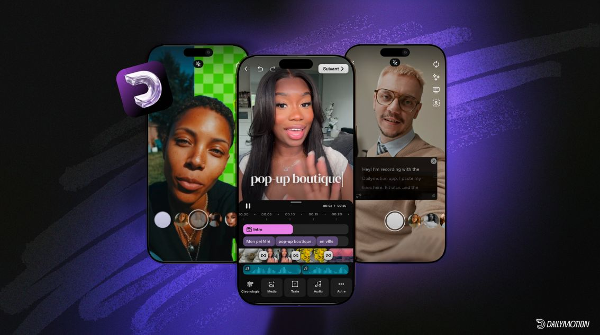

Dailymotion was founded in 2005 by Benjamin Bejbaum and Olivier Poitrey.
After its first fundraising round in 2006, the platform expanded internationally in 2008.
The French state acquired a stake in the company in 2009 to support its development.
Orange invested in the company in 2011 and became its sole owner in 2013. In 2015, Vivendi acquired
80% of Dailymotion and gradually shifted its focus towards media companies and professionals.
The platform launched a new video app in 2023, then joined the Canal+ Group in 2024. In 2026,
it created DayOne, a programme designed to support and fund content creators’ projects.
Dailymotion has launched a feed of short-form vertical videos that users can
scroll through one by one, in a style similar to TikTok. Recommendations are based on the videos
people watch and their preferences, helping them find content they might enjoy. This makes it
easy to discover new videos without having to search for them.
Creators can post short clips to showcase their work, share their ideas and reach a wider audience.
The format is especially suited to mobile phones, where videos can be watched full-screen and users can
easily move from one to the next. With this new feature, Dailymotion is modernising the way people browse
content on its platform and hopes to attract more young users. The short-video feed also shows how
platforms adopt popular formats to offer their audiences a familiar experience.
